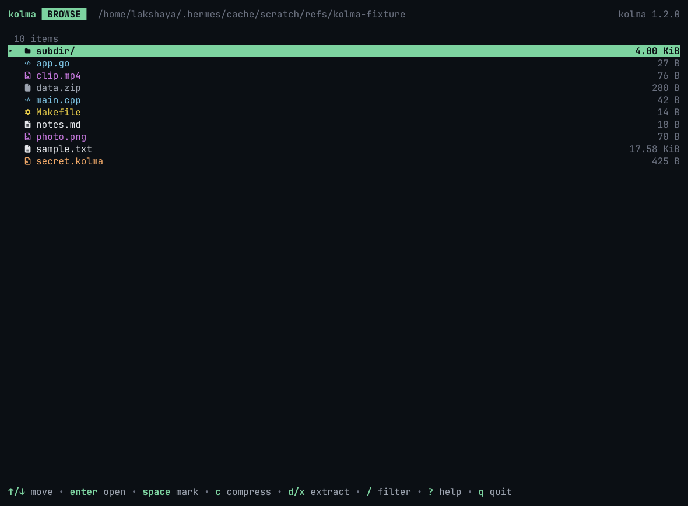
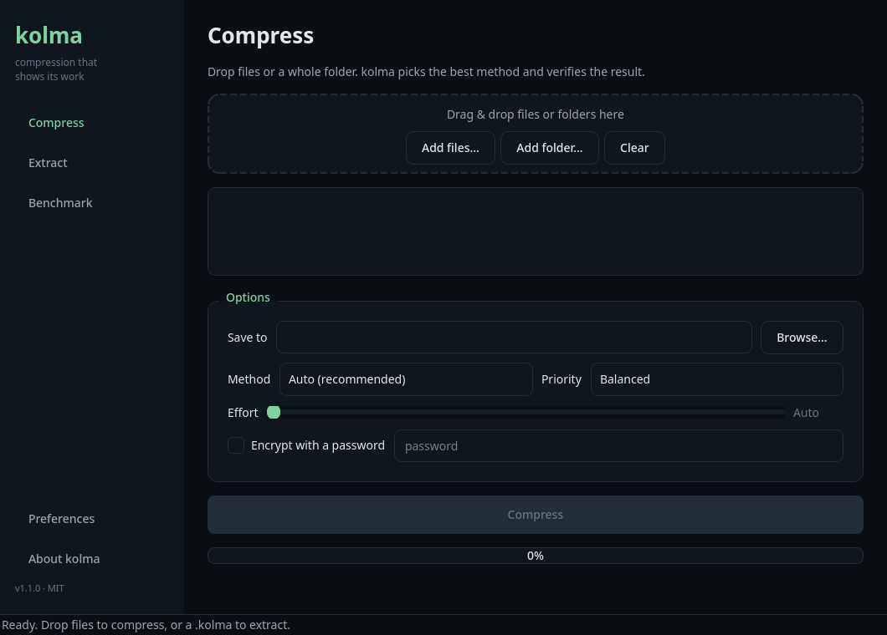
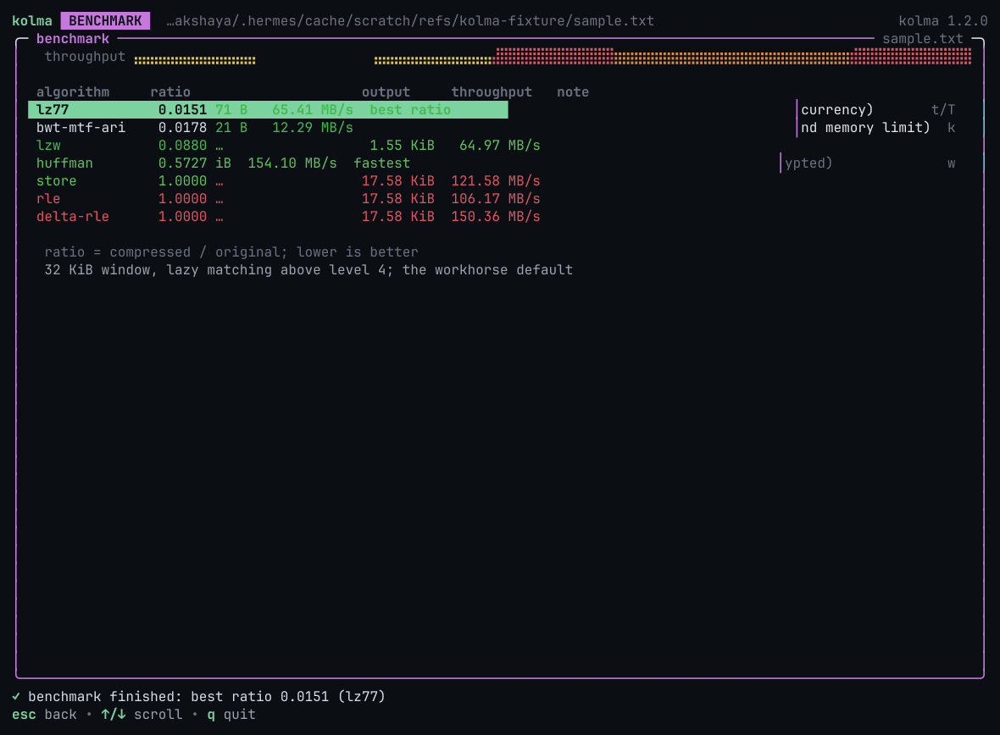

Compression that
shows its work.
A desktop app, terminal and CLI over one auditable C++ engine. Archives anything can open.

An engine you can audit, an app anyone can use.
Kolma pairs a pluggable compression engine with interfaces that hide the machinery. Every number on screen comes from the engine, not a guess.
Opens the archives you already have
Create .zip by default, and read zip, 7z, tar.gz, tar.xz and tar.bz2. Your files open in Finder, Explorer and file-roller, not just Kolma.
libarchive-backed, universal by defaultThe analyser decides with evidence
It samples your file, trials the methods, and picks the best one. You see the ratios before you commit.
Shrink video and images
Perceptual re-encoding makes media smaller without turning it into a brick. Quality presets, real output.
Split big files, extract in place
Cut archives into volumes for a FAT32 drive, then extract while reclaiming space as you go. No 2x free disk needed.
Parallel by construction
Chunks compress across your cores, then merge with a verified checksum.
chunked, merged, verifiedAuthenticated encryption
Encrypt-then-MAC with ChaCha20 and HMAC-SHA256. The tag is verified before a single byte is written to disk.
format v2, constant-time verificationFolders become one archive
Multi-select files and whole directories, bundle them into a single archive, and peek inside without extracting. Path-traversal safe.
bundles, contents preview, safe extractionPick the surface that fits the job.
A guided desktop app for everyday use, and a dense terminal UI for people who live in the shell. Both drive the same engine.

Desktop app
Drag files in, choose a format, press Compress. Inspect, shrink, split and test archives from the Tools view. Linux, macOS and Windows.

Terminal UI
Browse, mark, bundle and extract without leaving the terminal. Braille throughput graphs and value-ramped meters, checked at three sizes.
What the trials measured.
Every method on the same 1.8 MiB text corpus. Ratio is compressed over original, so lower is better.
| method | ratio | output | throughput | note |
|---|---|---|---|---|
| bwt-mtf-ari | 0.0035 | 6.45 KiB | 13.7 MB/s | best ratio |
| lz77 | 0.0122 | 22.5 KiB | 226.9 MB/s | |
| lzw | 0.0613 | 113 KiB | 40.4 MB/s | |
| huffman | 0.5626 | 1.02 MiB | 180.3 MB/s | |
| store | 1.0000 | 1.80 MiB | 1198 MB/s | fastest |
Security, stated plainly.
What Kolma protects, and what it does not. No fine print.
What is protected
- Encrypted archives use encrypt-then-MAC, verified before output.
- Every payload carries a CRC-32, checked on read and on restore.
- Extraction refuses path traversal and absolute paths.
- Overwrites need an explicit confirm, never silent.
- The parser is fuzzed and bounds-checked, sanitizer-clean.
What is not
- Passwords are only as strong as you make them.
- Legacy v1 archives are not authenticated. Re-encrypt them.
- Standard zip encryption is whatever the format provides.
- Kolma is not a substitute for a reviewed threat model.
Free, open source, checksummed.
Grab the desktop app for your platform, or install the CLI and terminal UI with one command.